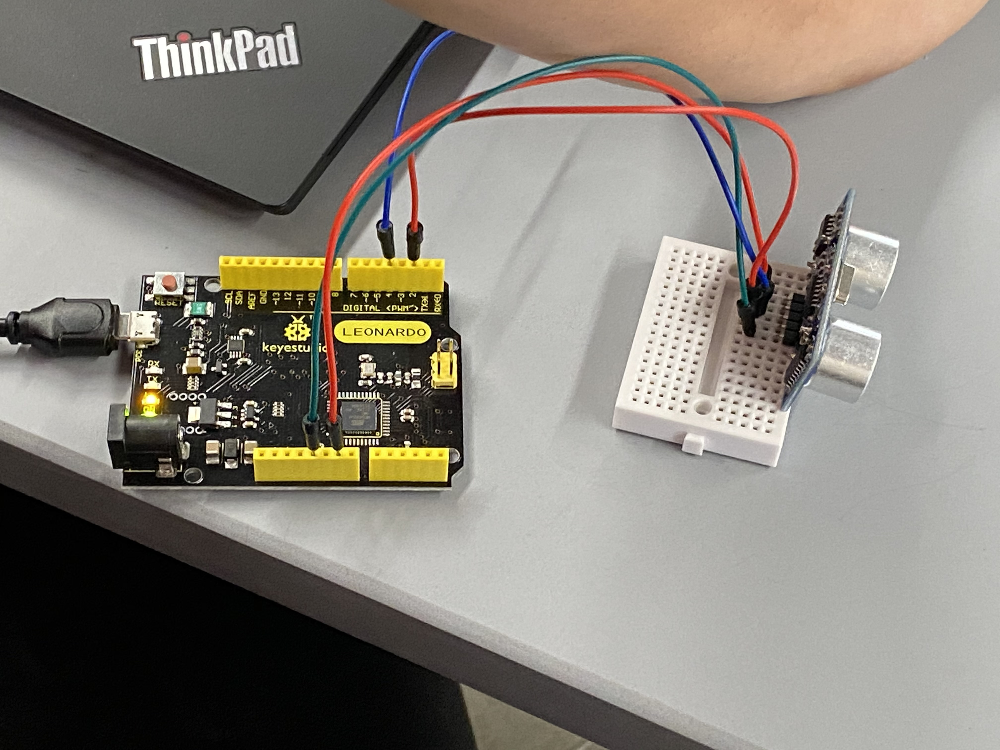

Projects

Antibiotic Research
Research on soil bacteria in hopes of finding new broad-spectrum antibiotics able to combat ESKAPE pathogens..

Intruder Alert
A device that detects people entering the room, allowing for any number of specific actions to be relayed to the computer.

Lock-Bike
An anti-theft bicycle that locks its own steering if the owner's key isn't detected. Created because my bike was stolen and I wanted an anti-theft mechanism more powerful than a bike lock.